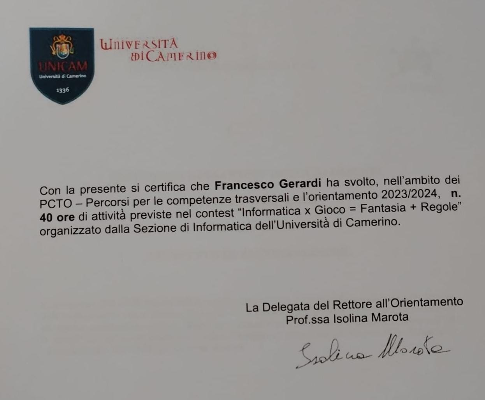
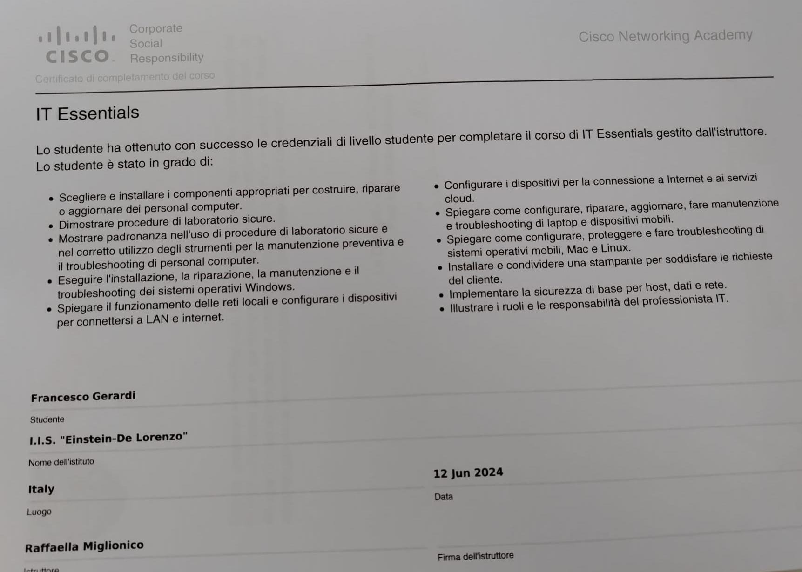
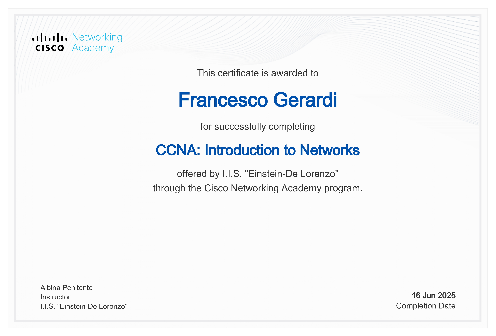
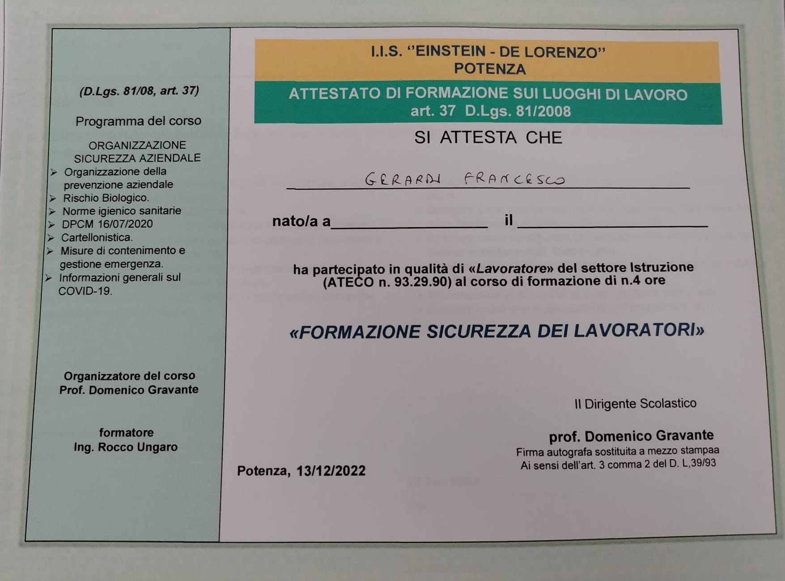
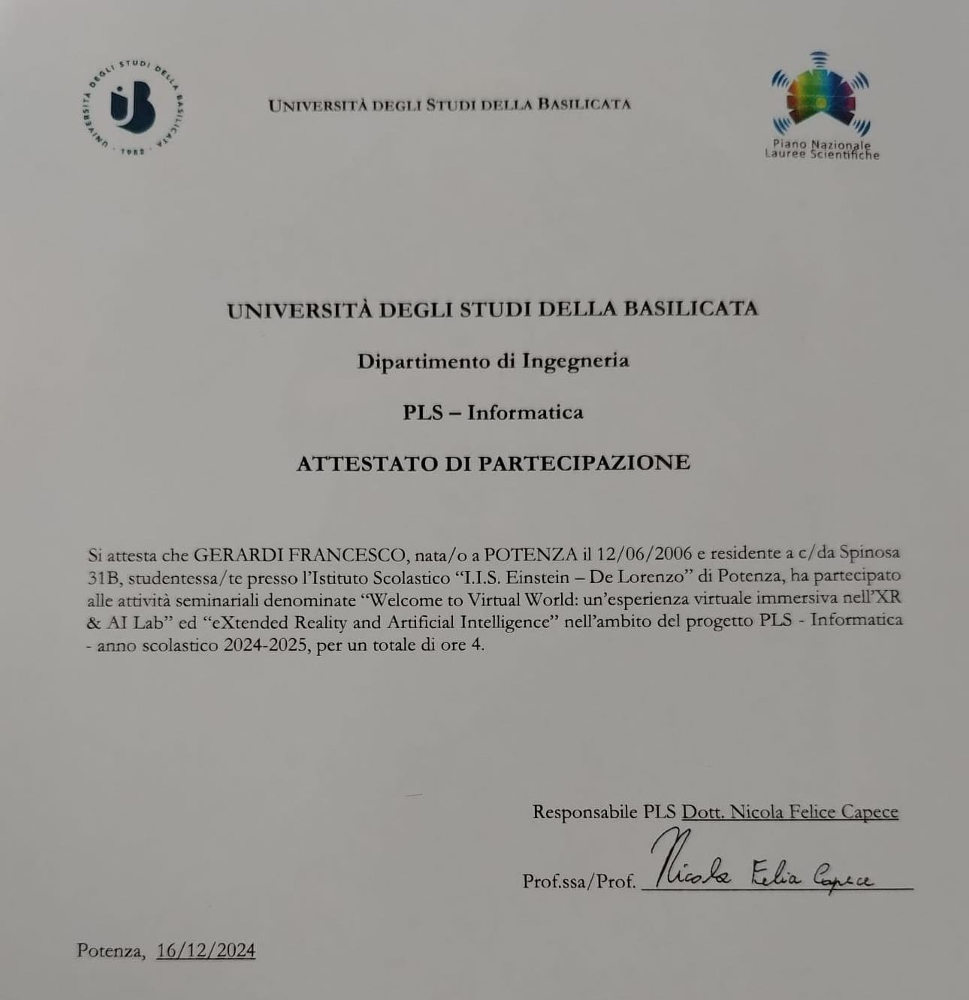

Creazione Videogioco

Fluppy Basilicata è un videogioco 2D realizzato in Unity, ispirato al classico Flappy Bird. Il giocatore controlla un uccellino che deve volare evitando ostacoli verticali generati in modo casuale. Il gioco è semplice, ma coinvolgente: ogni errore riporta al punto di partenza, stimolando la voglia di migliorarsi..
Cisco IT Essentials

Cisco IT Essential è un certificato che attesta competenze di base nell'informatica e nel supporto tecnico, rilasciato da Cisco, uno dei principali leader mondiali nel campo delle reti e delle tecnologie IT.
Competenze acquisite:
- Assemblare e installare computer con i componenti giusti.
- Utilizzare correttamente gli strumenti da laboratorio.
- Fare manutenzione preventiva e riparazioni hardware/software.
- Installare e usare sistemi operativi (come Windows, Linux).
- Configurare dispositivi per collegarli a una rete o a Internet.
- Eseguire diagnosi e troubleshooting di base.
- Installare stamp>anti e soddisfare richieste comuni IT.
- Applicare concetti base di sicurezza informatica.
- Comprendere i ruoli e le responsabilità di un tecnico IT.
CCNA1

Il CCNA 1 è il primo modulo del percorso di certificazione Cisco CCNA. Fornisce le basi del networking, spiegando come funzionano le reti, i modelli OSI e TCP/IP, l’indirizzamento IP (IPv4 e IPv6) e i dispositivi di rete come switch e router. Il corso include esercitazioni pratiche con il simulatore Packet Tracer e introduce i comandi base del sistema operativo Cisco (IOS).
Sicurezza sul lavoro

L’attestato di formazione sui luoghi di lavoro certifica che il lavoratore ha ricevuto una formazione obbligatoria in materia di **sicurezza e salute sul lavoro**, come previsto dal **D.Lgs. 81/2008**. Il corso fornisce le conoscenze base sui rischi presenti nei luoghi di lavoro, sulle misure di prevenzione e sull’uso corretto dei dispositivi di protezione individuale (DPI). È obbligatorio per tutti i lavoratori e può variare in base al settore e al livello di rischio (basso, medio, alto). L’attestato è rilasciato al termine del corso e ha validità legale.
PLS-Informatica

Presso l’Università degli Studi della Basilicata, alcune attività didattiche e laboratoriali hanno integrato l’esperienza virtuale e l’intelligenza artificiale per arricchire l’apprendimento. Queste esperienze immersive permettono agli studenti di interagire con ambienti simulati in 3D, sperimentare scenari complessi in sicurezza (es. realtà aumentata o virtuale) e utilizzare strumenti AI per analisi, automazione o supporto decisionale. L’obiettivo è favorire l’innovazione nella didattica e sviluppare competenze digitali avanzate in vari ambiti, dalla scienza all’ingegneria fino alle scienze umane.